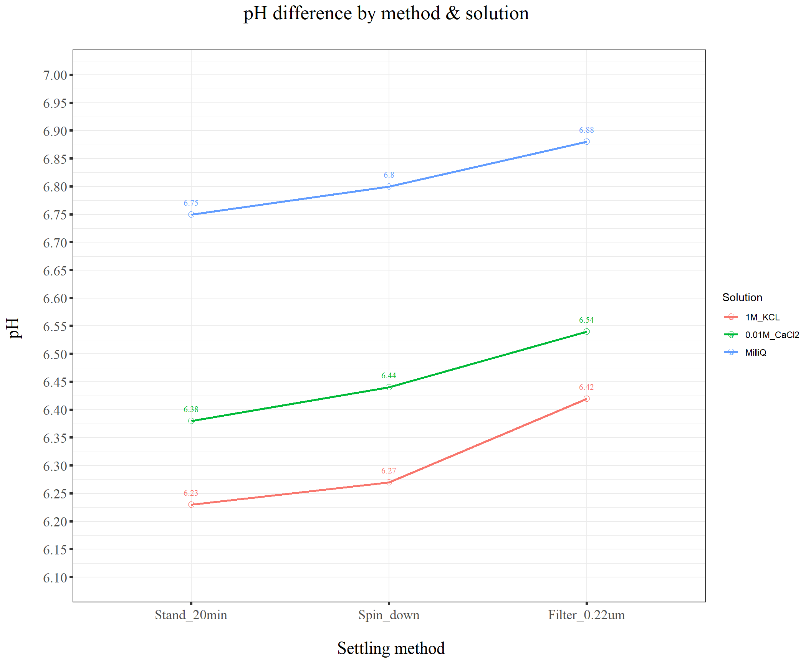
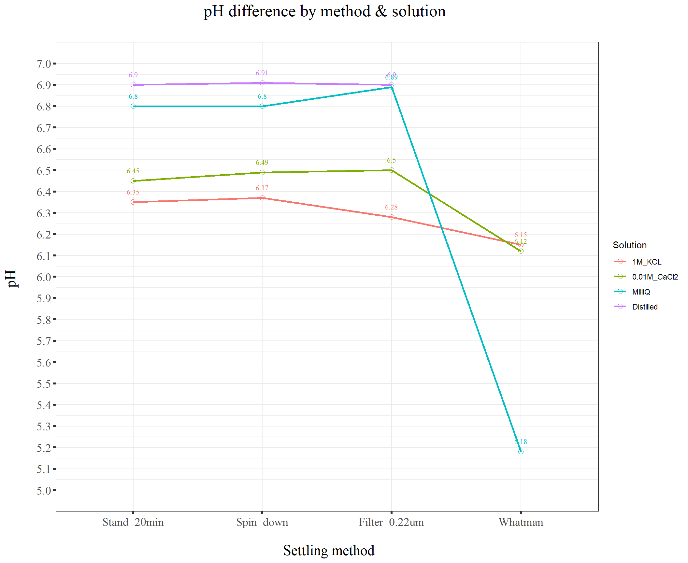
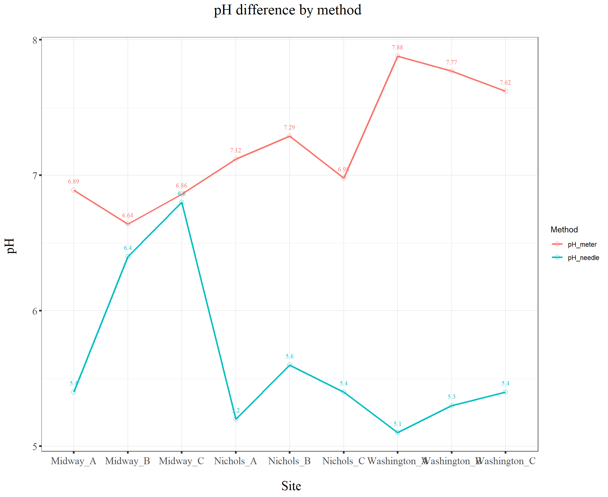
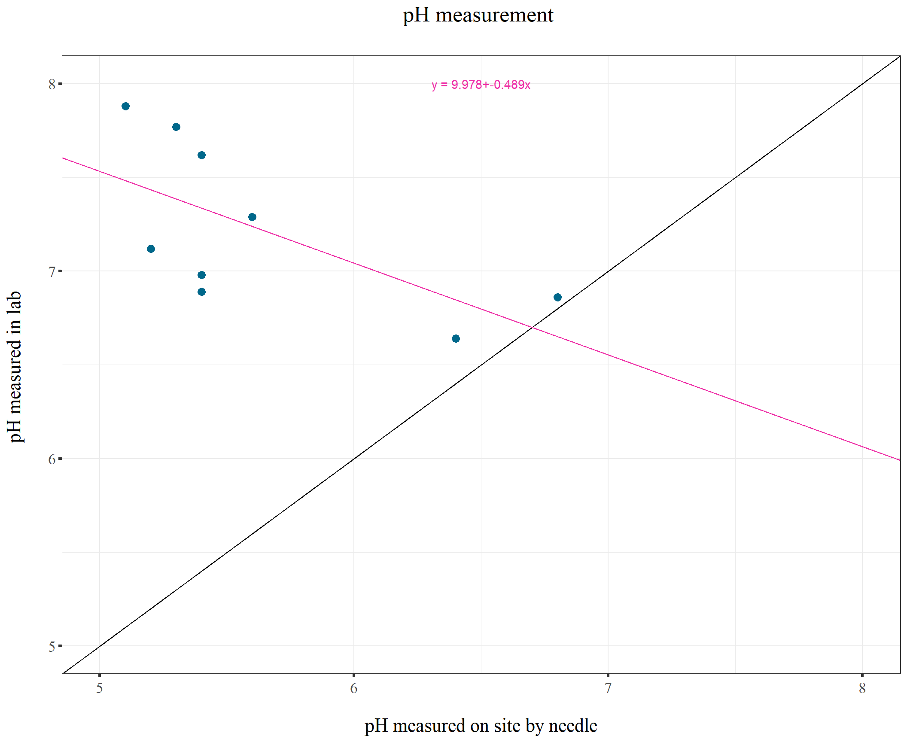
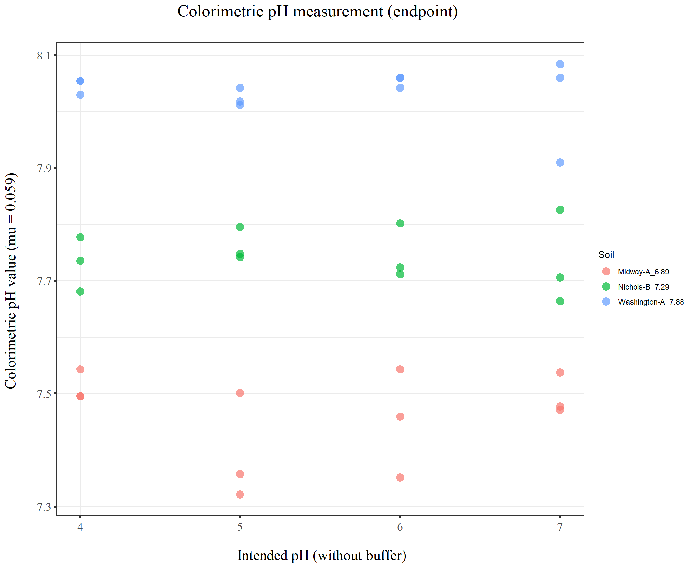
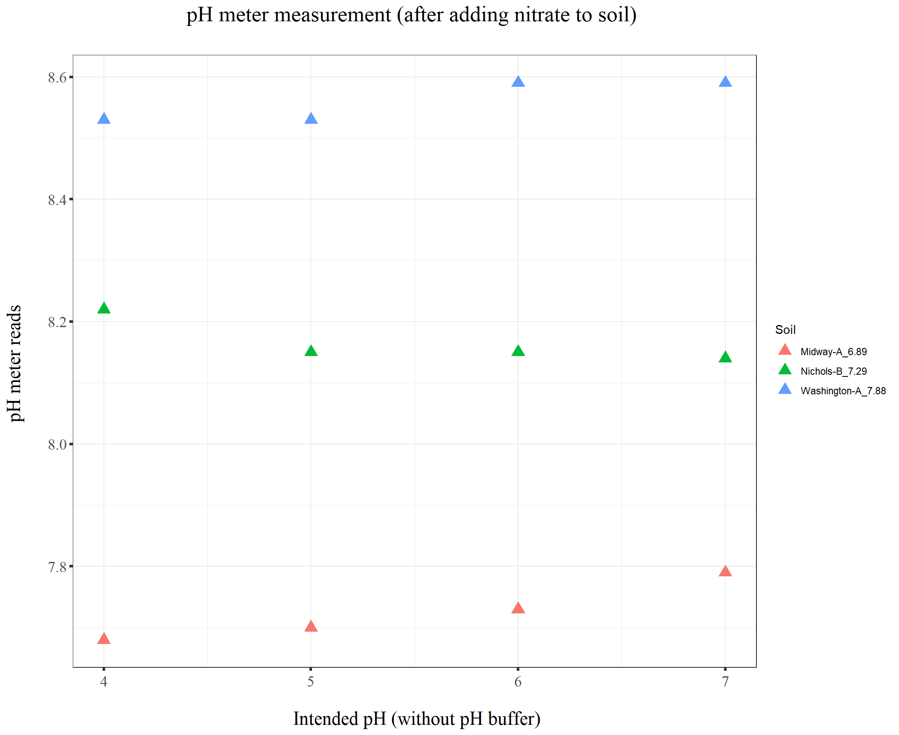
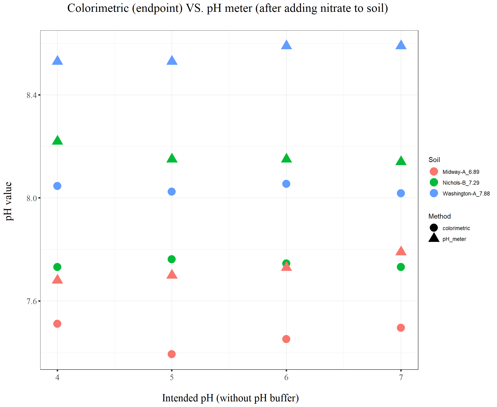
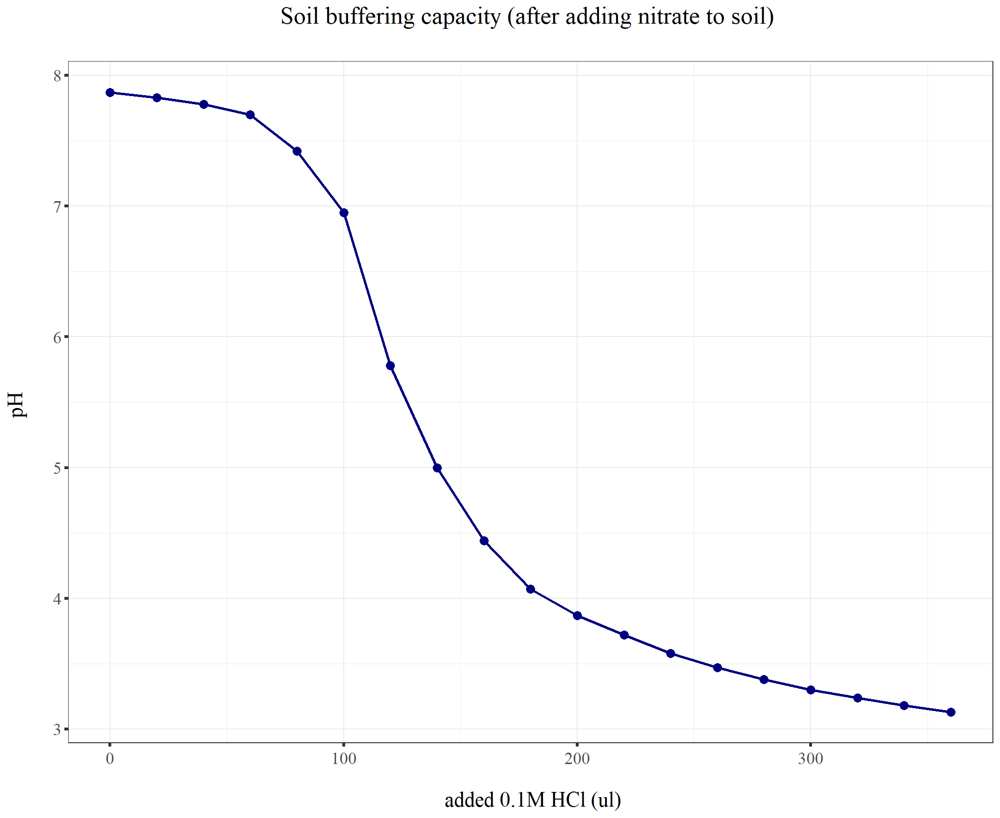
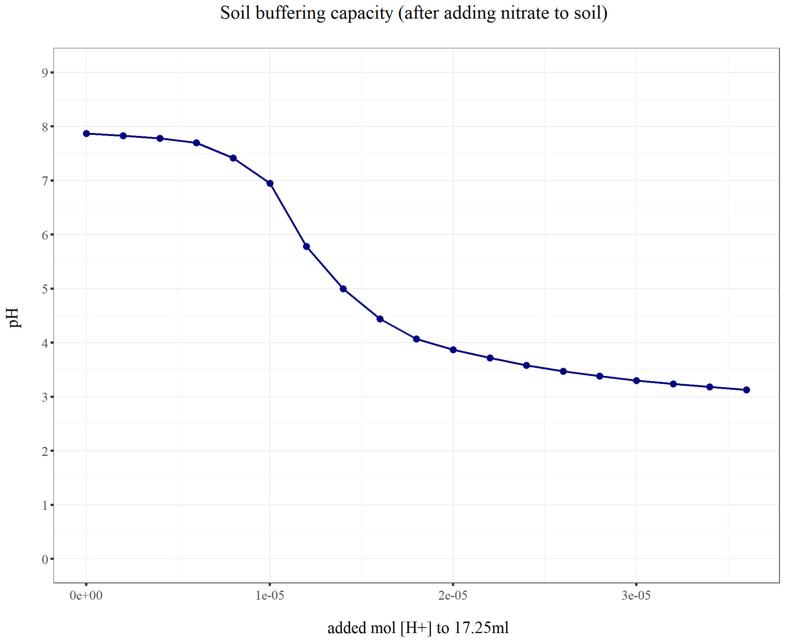
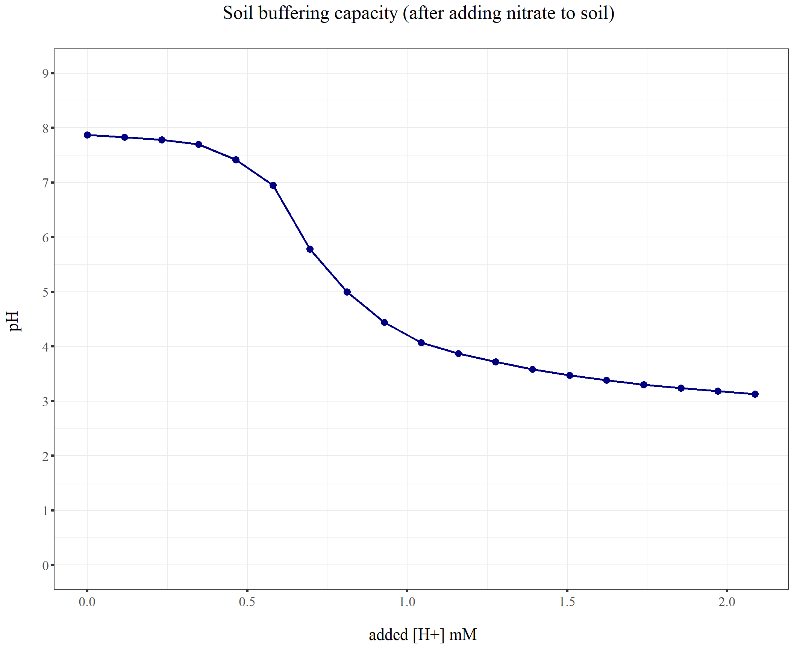

Last updated: 2021-12-07
Checks: 7 0
Knit directory: Denit_visualization_R/
This reproducible R Markdown analysis was created with workflowr (version 1.6.2). The Checks tab describes the reproducibility checks that were applied when the results were created. The Past versions tab lists the development history.
Great! Since the R Markdown file has been committed to the Git repository, you know the exact version of the code that produced these results.
Great job! The global environment was empty. Objects defined in the global environment can affect the analysis in your R Markdown file in unknown ways. For reproduciblity it’s best to always run the code in an empty environment.
The command set.seed(20210924) was run prior to running the code in the R Markdown file. Setting a seed ensures that any results that rely on randomness, e.g. subsampling or permutations, are reproducible.
Great job! Recording the operating system, R version, and package versions is critical for reproducibility.
Nice! There were no cached chunks for this analysis, so you can be confident that you successfully produced the results during this run.
Great job! Using relative paths to the files within your workflowr project makes it easier to run your code on other machines.
Great! You are using Git for version control. Tracking code development and connecting the code version to the results is critical for reproducibility.
The results in this page were generated with repository version ff4ef7a. See the Past versions tab to see a history of the changes made to the R Markdown and HTML files.
Note that you need to be careful to ensure that all relevant files for the analysis have been committed to Git prior to generating the results (you can use wflow_publish or wflow_git_commit). workflowr only checks the R Markdown file, but you know if there are other scripts or data files that it depends on. Below is the status of the Git repository when the results were generated:
Ignored files:
Ignored: .Rhistory
Ignored: .Rproj.user/
Ignored: Figure_211014_external_lab/
Untracked files:
Untracked: 210928_pH.pdf
Untracked: 211014_TN.pdf
Untracked: 211014_drying_oven_TOC.pdf
Untracked: 211014_toc_lab.pdf
Untracked: 211020_df_full_innate.xlsx
Untracked: Figure_210911_TOC/
Untracked: Figure_210924/
Untracked: Figure_210927_TOC/
Untracked: Figure_210929/
Untracked: Figure_211006/
Untracked: Figure_211007/
Untracked: Figure_211008/
Untracked: Figure_211013/
Untracked: analysis/211128_Griess_time_series_3soil.Rmd
Untracked: data/120321_soil_buffering_capacity_Nichols-B.xlsx
Untracked: data/210911_TOC_sample_plate1.xlsx
Untracked: data/210922_Griess_sample_plate1-investigating.xlsx
Untracked: data/210922_Griess_sample_plate1.xlsx
Untracked: data/210927_TOC_sample_plate1_100ul.xlsx
Untracked: data/210927_TOC_sample_plate1_10ul.xlsx
Untracked: data/210928_Griess_sample_plate1.xlsx
Untracked: data/211005_Griess_sample_plate1.xlsx
Untracked: data/211007_Griess_blank_plate1.xlsx
Untracked: data/211007_Griess_blank_plate2.xlsx
Untracked: data/211008_Griess_blank_plate0.xlsx
Untracked: data/211008_Griess_blank_plate1.xlsx
Untracked: data/211017_Griess_plate0.xlsx
Untracked: data/211017_Griess_plate1.xlsx
Untracked: data/211017_Griess_plate2.xlsx
Untracked: data/211017_Griess_plate3.xlsx
Untracked: data/211017_Griess_plate4.xlsx
Untracked: data/211017_Griess_plate5.xlsx
Untracked: data/211017_Griess_plate6.xlsx
Untracked: data/211017_Griess_plate7.xlsx
Untracked: data/211017_Griess_plate8.xlsx
Untracked: data/211019_Griess_plate1.xlsx
Untracked: data/211020_Griess_plate0.xlsx
Untracked: data/211020_Griess_plate1.xlsx
Untracked: data/211020_df_full_innate.xlsx
Untracked: data/211025_Griess_no3_fit_plate0.xlsx
Untracked: data/211025_Griess_no3_fit_plate1.xlsx
Untracked: data/211025_Griess_plate0.xlsx
Untracked: data/211025_Griess_plate1.xlsx
Untracked: data/211028_Griess_plate1.xlsx
Untracked: data/211028_Griess_plate1_no3_fit.xlsx
Untracked: data/211028_Griess_plate2.xlsx
Untracked: data/211028_Griess_plate2_no3_fit.xlsx
Untracked: data/211028_Griess_plate3.xlsx
Untracked: data/211028_Griess_plate3_no3_fit.xlsx
Untracked: data/211028_Griess_plate4.xlsx
Untracked: data/211028_Griess_plate4_no3_fit.xlsx
Untracked: data/211028_time_table.xlsx
Untracked: data/211127_Griess_SUP1.xlsx
Untracked: data/211127_Griess_SUP11.xlsx
Untracked: data/211127_Griess_SUP3.xlsx
Untracked: data/211127_Griess_SUP5.xlsx
Untracked: data/211127_Griess_SUP7.xlsx
Untracked: data/211127_Griess_SUP9.xlsx
Untracked: data/211127_Griess_plate0.xlsx
Untracked: data/211127_time_table.xlsx
Untracked: data/211128_Griess_plate1.xlsx
Untracked: data/211128_Griess_plate10.xlsx
Untracked: data/211128_Griess_plate11.xlsx
Untracked: data/211128_Griess_plate2.xlsx
Untracked: data/211128_Griess_plate3.xlsx
Untracked: data/211128_Griess_plate4.xlsx
Untracked: data/211128_Griess_plate5.xlsx
Untracked: data/211128_Griess_plate6.xlsx
Untracked: data/211128_Griess_plate7.xlsx
Untracked: data/211128_Griess_plate8.xlsx
Untracked: data/211128_Griess_plate9.xlsx
Untracked: data/211128_time_table.xlsx
Untracked: data/211201_pH_colorimetric.xlsx
Untracked: data/TOC_TN_measurement_2_labs_211014.xlsx
Untracked: data/dry_weight_curve(9.5.21).xlsx
Untracked: data/pH_data(11.17.21)-Midway_etc.xlsx
Untracked: data/pH_data(12.6.21)-Midway_incubation_endpoint.xlsx
Untracked: data/pH_data(9.14.21).xlsx
Untracked: data/pH_data(9.28.21).xlsx
Untracked: data/~$120321_soil_buffering_capacity_Nichols-B.xlsx
Untracked: df_NO2NO3.xlsx
Unstaged changes:
Modified: analysis/211127_Griess_time_series_slurry_vs_liquid_culture.Rmd
Modified: analysis/index.Rmd
Note that any generated files, e.g. HTML, png, CSS, etc., are not included in this status report because it is ok for generated content to have uncommitted changes.
These are the previous versions of the repository in which changes were made to the R Markdown (analysis/Soil_pH_method.Rmd) and HTML (docs/Soil_pH_method.html) files. If you’ve configured a remote Git repository (see ?wflow_git_remote), click on the hyperlinks in the table below to view the files as they were in that past version.
| File | Version | Author | Date | Message |
|---|---|---|---|---|
| Rmd | ff4ef7a | KiseokUchicago | 2021-12-07 | wflow_publish(“analysis/Soil_pH_method.Rmd”) |
| html | b7a27fc | KiseokUchicago | 2021-11-17 | Build site. |
| Rmd | 0e51c78 | KiseokUchicago | 2021-11-17 | wflow_publish("analysis/*.Rmd") |
| html | a07efe3 | KiseokUchicago | 2021-11-05 | Build site. |
| html | 3032cf3 | KiseokUchicago | 2021-10-21 | Build site. |
| html | 9275f67 | KiseokUchicago | 2021-10-21 | Build site. |
| Rmd | a2e06a9 | KiseokUchicago | 2021-10-21 | all |
| html | d49c1e8 | KiseokUchicago | 2021-10-14 | Build site. |
| html | 9d23c75 | KiseokUchicago | 2021-10-08 | Build site. |
| html | d208470 | KiseokUchicago | 2021-10-08 | Build site. |
| html | ae8de17 | KiseokUchicago | 2021-10-08 | Build site. |
| Rmd | f0fe610 | KiseokUchicago | 2021-10-08 | wflow_publish("analysis/*.Rmd") |
| html | 390659b | KiseokUchicago | 2021-09-24 | Build site. |
| Rmd | 8c7b936 | KiseokUchicago | 2021-09-24 | wflow_publish("analysis/*.Rmd") |
Researcher: Kiseok Lee
Experimental date: 9/14/21 and 9/28/21
Lab: Seppe Kuehn
# libraries
library(dplyr)
library(ggplot2)
library(RColorBrewer)
library(vegan)
library(tidyverse)
library(magrittr)
library(readxl)
library(reshape2)
library(gtools)
library(devtools)
library(openxlsx)
library(ape)
library(stringr)
library(tidyr)
## theme for ggplot
mytheme <- theme_bw() +
theme(plot.title = element_text(size = 19,hjust = 0.5, family="serif")) +
theme(axis.title.x = element_text(size = 17,hjust = 0.5, family="serif")) +
theme(axis.title.y = element_text(size = 17,hjust = 0.5, family="serif")) +
theme(axis.text.x = element_text(hjust = 0.5, vjust=0.3,size=13, family="serif"))+
theme(axis.text.y = element_text(size=10, family="serif"))+
theme(panel.grid.major = element_blank()) +
theme(panel.grid.minor = element_blank(),panel.background=element_blank(),panel.border=element_blank(),plot.background=element_blank()) +
theme(axis.ticks = element_line(size = 1.1))
mytheme_2d <- theme_bw() +
theme(plot.title = element_text(size = 19,hjust = 0.5, family="serif")) +
theme(axis.title.x = element_text(size = 17,hjust = 0.5, family="serif")) +
theme(axis.title.y = element_text(size = 17,hjust = 0.5, family="serif")) +
theme(axis.text.x = element_text(hjust = 0.5, vjust=0.3,size=13, family="serif"))+
theme(axis.text.y = element_text(size=13, family="serif"))+
# theme(panel.grid.major = element_blank()) +
# theme(panel.grid.minor = element_blank(),panel.background=element_blank(),plot.background=element_blank()) +
theme(axis.ticks = element_line(size = 1.1))
# color collection
my_color_collection <- c(
"#CBD588", "#5F7FC7", "orange", "#AD6F3B", "#673770",
"#D14285", "#652926", "#C84248", "#8569D5", "#5E738F",
"#D1A33D", "#8A7C64", "#599861","#616163", "#FFCDB2",
"#6D9F71", "#242F40",
"#CCA43B", "#F92A82", "#ED7B84", "#7EB77F",
"#DEC4A1", "#E5D1D0", '#0E8482', '#C9DAEA', '#337357',
'#95C623', '#E55812', '#04471C', '#F2D7EE', '#D3BCC0',
'#A5668B', '#69306D', '#0E103D', '#1A535C', '#4ECDC4',
'#F7FFF7', '#FF6B6B', '#FFE66D', '#6699CC', '#FFF275',
'#FF8C42', '#FF3C38', '#A23E48', '#000000', '#CF5C36',
'#EEE5E9', '#7C7C7C', '#EFC88B', '#2E5266', '#6E8898',
'#9FB1BC', '#D3D0CB', '#E2C044', '#5BC0EB', '#FDE74C',
'#9BC53D', '#E55934', '#FA7921', "#CD9BCD", "#508578", "#DA5724")
# for git push, use this instead of using wflow_git_push()
# git push -u origin master (in the Git app / in the working directory)# import file
df_pH <- openxlsx::read.xlsx("data/pH_data(9.14.21).xlsx")
class(df_pH)[1] "data.frame"df_pH <- df_pH %>% rename(Method = X1)
df_pH_gg <- melt(df_pH ,variable.name = "Solution",value.name = "pH")
# Order the method
df_pH_gg$Method <- ordered(df_pH_gg$Method, levels=c("Stand_20min", "Spin_down", "Filter_0.22um"))
# remove NA
dim(df_pH_gg)[1] 9 3df_pH_gg2 <- na.omit(df_pH_gg)
dim(df_pH_gg2)[1] 9 3# plot
ggplot(df_pH_gg2, aes(x=Method, y=pH, color=Solution, group=Solution)) +
geom_point(size=2.5, shape=21) +
geom_line(size=1)+
scale_fill_brewer(palette='Set2') +
ylab("pH \n") +
xlab("\n Settling method") +
scale_y_continuous(breaks = seq(6,7,0.05), limits=c(6.1, 7))+
ggtitle("pH difference by method & solution \n") +
# label
geom_text(aes(label = pH), size = 3, vjust = -1.5, family="serif")+
mytheme_2d
# import file
df_pH <- openxlsx::read.xlsx("data/pH_data(9.28.21).xlsx")
class(df_pH)[1] "data.frame"df_pH <- df_pH %>% rename(Method = X1)
df_pH_gg <- melt(df_pH ,variable.name = "Solution",value.name = "pH")
# Order the method
df_pH_gg$Method <- ordered(df_pH_gg$Method, levels=c("Stand_20min", "Spin_down", "Filter_0.22um", "Whatman"))
# remove NA
dim(df_pH_gg)[1] 16 3# plot
ggplot(df_pH_gg, aes(x=Method, y=pH, color=Solution, group=Solution)) +
geom_point(size=2.5, shape=21) +
geom_line(size=1)+
scale_fill_brewer(palette='Set2') +
ylab("pH \n") +
xlab("\n Settling method") +
scale_y_continuous(breaks = seq(5,7,0.1), limits=c(5, 7))+
ggtitle("pH difference by method & solution \n") +
# label
geom_text(aes(label = pH), size = 3, vjust = -1.5, family="serif", show.legend = FALSE)+
mytheme_2d
Experimental date: 11/10/21
Analysis: 11/17/21
# import file
df_pH <- openxlsx::read.xlsx("data/pH_data(11.17.21)-Midway_etc.xlsx")
class(df_pH)[1] "data.frame"df_pH <- df_pH %>% rename(Site = X1)
df_pH_gg <- melt(df_pH ,variable.name = "Method",value.name = "pH")
# Order the method
df_pH_gg$Method <- factor(df_pH_gg$Method, levels=c("pH_meter", "pH_needle"))
# remove NA
dim(df_pH_gg)[1] 18 3# plot
ggplot(df_pH_gg, aes(x=Site, y=pH, color=Method, group=Method)) +
geom_point(size=2.5, shape=21) +
geom_line(size=1)+
scale_fill_brewer(palette='Set2') +
ylab("pH \n") +
xlab("\n Site") +
# scale_y_continuous(breaks = seq(5,7,0.1), limits=c(5, 7))+
ggtitle("pH difference by method \n") +
# label
geom_text(aes(label = pH), size = 3, vjust = -1.5, family="serif", show.legend = FALSE)+
mytheme_2d
# 2d scatter plot
fit.pH <- lm(pH_meter ~ pH_needle, df_pH)
# Plot fitted linear regression line
ggplot(df_pH, aes(x=pH_needle, y=pH_meter)) +
geom_point(size=3, color="deepskyblue4") +
# geom_line(size=1)+
# geom_errorbar(aes(ymin=NO3_mM - sd_NO3_mM, ymax=NO3_mM + sd_NO3_mM), width=.05)+
# scale_color_brewer(palette='Set2') +
# scale_color_manual(values = c("maroon2","deepskyblue4"))+
ylab("pH measured in lab \n") +
xlab("\n pH measured on site by needle ") +
scale_y_continuous(breaks = seq(5,8,1), limits=c(5, 8))+
scale_x_continuous(breaks = seq(5,8,1), limits=c(5, 8))+
# geom_text_repel(aes(label = round(NO3_mM,3)), size = 3,family="serif", show.legend = FALSE)+
ggtitle("pH measurement \n") +
geom_abline(slope = 1, intercept=0, show.legend = "y=x")+
# regression line
geom_abline(slope = coef(fit.pH)[[2]], intercept = coef(fit.pH)[[1]],
color = "maroon2") +
# show equation
# stat_cor(aes(label = paste(..rr.label.., ..p.label.., sep = "~`,`~"))) +
annotate("text",x=6.5,y=8, label= paste0("y = ", round(coef(fit.pH)[[1]],3),"+",round(coef(fit.pH)[[2]],3),"x"), color = "maroon2") +
mytheme_2d
Experimental date: 12/01/21
Analysis: 12/06/21
# import file
df_pH_color <- openxlsx::read.xlsx("data/211201_pH_colorimetric.xlsx")
df_pH_meter <- openxlsx::read.xlsx("data/pH_data(12.6.21)-Midway_incubation_endpoint.xlsx")
class(df_pH_color)[1] "data.frame"colnames(df_pH_color)[1] "Well" "Sample" "Soil" "pH"
[5] "Time_point" "Plate" "pH_colorimetric"colnames(df_pH_meter)[1] "Sample" "Soil" "pH" "pH_meter"head(df_pH_color) Well Sample Soil pH Time_point Plate pH_colorimetric
1 A01 Midway-A_6.89_pH4 Midway-A_6.89 4 T10 P1 7.495495
2 A02 Midway-A_6.89_pH6 Midway-A_6.89 6 T10 P1 7.351351
3 A03 Midway-A_6.89_pH4 Midway-A_6.89 4 T10 P1 7.543544
4 A04 Midway-A_6.89_pH6 Midway-A_6.89 6 T10 P1 7.543544
5 A05 Midway-A_6.89_pH4 Midway-A_6.89 4 T10 P1 7.495495
6 A06 Midway-A_6.89_pH6 Midway-A_6.89 6 T10 P1 7.459459dim(df_pH_color)[1] 36 7#
# df_pH_gg <- melt(df_pH ,variable.name = "Method",value.name = "pH")
#
# # Order the method
# df_pH_gg$Method <- factor(df_pH_gg$Method, levels=c("pH_meter", "pH_needle"))
#
# # remove NA
# dim(df_pH_gg)# plot - Colorimetric value
ggplot(df_pH_color, aes(x=pH, y=pH_colorimetric, color=Soil, group=Soil)) +
geom_point(size=4, shape=16, alpha=0.7) +
# geom_line(size=1)+
# scale_color_brewer(palette='Set1') +
ylab("Colorimetric pH value (mu = 0.059) \n") +
xlab("\n Intended pH (without buffer)") +
# scale_y_continuous(breaks = seq(5,7,0.1), limits=c(5, 7))+
ggtitle("Colorimetric pH measurement (endpoint) \n") +
# label
# geom_text(aes(label = pH_colorimetric), size = 3, vjust = -1.5, family="serif", show.legend = FALSE)+
mytheme_2d
# plot - pH meter
# this is not endpoint, I added nitrate and water to the soil and shook and measured the supernatant.
ggplot(df_pH_meter, aes(x=pH, y=pH_meter, color=Soil, group=Soil)) +
geom_point(size=4, shape=17, alpha=1) +
# geom_line(size=1)+
# scale_color_brewer(palette='Set1') +
ylab("pH meter reads \n") +
xlab("\n Intended pH (without pH buffer)") +
# scale_y_continuous(breaks = seq(5,7,0.1), limits=c(5, 7))+
ggtitle("pH meter measurement (after adding nitrate to soil) \n") +
# label
# geom_text(aes(label = pH_colorimetric), size = 3, vjust = -1.5, family="serif", show.legend = FALSE)+
mytheme_2d
# show difference of pH meter and colorimetric pH value
# join df
# df_pH_merge <- df_pH_color %>% left_join(df_pH_meter, by=c("Soil"="Soil", "pH"="pH")) %>% select(Soil, pH, pH_colorimetric, pH_meter)
df_pH_color2 <- df_pH_color %>% group_by(Soil, pH) %>% summarise(pH_colorimetric = mean(pH_colorimetric)) %>% ungroup()
df_pH_color2 <- df_pH_color2 %>% rename(pH_read = pH_colorimetric) %>% mutate(Method = "colorimetric")
df_pH_meter2 <- df_pH_meter %>% rename(pH_read = pH_meter) %>% mutate(Method = "pH_meter") %>% select(-Sample)
df_pH_merge <- rbind(df_pH_color2, df_pH_meter2)
ggplot(df_pH_merge, aes(x=pH, y=pH_read, color=Soil, shape=Method)) +
geom_point(size=6, alpha=1) +
# geom_line(size=1)+
# scale_color_brewer(palette='Set1') +
ylab("pH value \n") +
xlab("\n Intended pH (without pH buffer)") +
# scale_y_continuous(breaks = seq(5,7,0.1), limits=c(5, 7))+
ggtitle("Colorimetric (endpoint) VS. pH meter (after adding nitrate to soil) \n") +
# label
# geom_text(aes(label = pH_colorimetric), size = 3, vjust = -1.5, family="serif", show.legend = FALSE)+
mytheme_2d
Experimental date: 12/03/21
Analysis: 12/07/21
df_nic <- openxlsx::read.xlsx("data/120321_soil_buffering_capacity_Nichols-B.xlsx")
ggplot(df_nic, aes(x=`0.1M_HCl_ul`, y=`Nichols-B`)) +
geom_point(size=3, shape=16, alpha=1, color='navy') +
geom_line(size=1, color='navy')+
# scale_color_brewer(palette='Set1') +
ylab("pH \n") +
xlab("\n added 0.1M HCl (ul)") +
# scale_y_continuous(breaks = seq(5,7,0.1), limits=c(5, 7))+
ggtitle("Soil buffering capacity (after adding nitrate to soil) \n") +
# label
# geom_text(aes(label = pH_colorimetric), size = 3, vjust = -1.5, family="serif", show.legend = FALSE)+
mytheme_2d
# convert x axis to mol
df_nic %<>% mutate(H_mol = `0.1M_HCl_ul` * 0.0001)
ggplot(df_nic, aes(x=H_mol, y=`Nichols-B`)) +
geom_point(size=3, shape=16, alpha=1, color='navy') +
geom_line(size=1, color='navy')+
# scale_color_brewer(palette='Set1') +
ylab("pH \n") +
xlab("\n added 0.1M HCl (ul)") +
scale_y_continuous(breaks = seq(0,9,1), limits=c(0, 9))+
# scale_x_continuous(breaks = seq(0,7,0.1), limits=c(5, 7))+
ggtitle("Soil buffering capacity (after adding nitrate to soil) \n") +
# label
# geom_text(aes(label = pH_colorimetric), size = 3, vjust = -1.5, family="serif", show.legend = FALSE)+
mytheme_2d
# Washington-B sample
ggplot(df_nic, aes(x=`0.1M_HCl_ul`, y=`Washington-A`)) +
geom_point(size=3, shape=16, alpha=1, color='navy') +
geom_line(size=1, color='navy')+
# scale_color_brewer(palette='Set1') +
ylab("pH \n") +
xlab("\n added 0.1M HCl (ul)") +
# scale_y_continuous(breaks = seq(5,7,0.1), limits=c(5, 7))+
ggtitle("Soil buffering capacity (Washington-A soil sample) \n") +
# label
# geom_text(aes(label = pH_colorimetric), size = 3, vjust = -1.5, family="serif", show.legend = FALSE)+
mytheme_2d
sessionInfo()R version 4.0.3 (2020-10-10)
Platform: x86_64-w64-mingw32/x64 (64-bit)
Running under: Windows 10 x64 (build 19042)
Matrix products: default
locale:
[1] LC_COLLATE=English_United States.1252
[2] LC_CTYPE=English_United States.1252
[3] LC_MONETARY=English_United States.1252
[4] LC_NUMERIC=C
[5] LC_TIME=English_United States.1252
attached base packages:
[1] stats graphics grDevices utils datasets methods base
other attached packages:
[1] ape_5.5 openxlsx_4.2.3 devtools_2.4.0 usethis_2.0.1
[5] gtools_3.8.2 reshape2_1.4.4 readxl_1.3.1 magrittr_2.0.1
[9] forcats_0.5.1 stringr_1.4.0 purrr_0.3.4 readr_1.4.0
[13] tidyr_1.1.3 tibble_3.0.4 tidyverse_1.3.1 vegan_2.5-7
[17] lattice_0.20-41 permute_0.9-5 RColorBrewer_1.1-2 ggplot2_3.3.5
[21] dplyr_1.0.5 workflowr_1.6.2
loaded via a namespace (and not attached):
[1] nlme_3.1-149 fs_1.5.0 lubridate_1.7.10 httr_1.4.2
[5] rprojroot_2.0.2 tools_4.0.3 backports_1.2.1 bslib_0.2.5.1
[9] utf8_1.1.4 R6_2.5.0 DBI_1.1.1 mgcv_1.8-33
[13] colorspace_2.0-0 withr_2.4.2 prettyunits_1.1.1 processx_3.5.1
[17] tidyselect_1.1.1 compiler_4.0.3 git2r_0.28.0 cli_3.0.1
[21] rvest_1.0.1 xml2_1.3.2 desc_1.3.0 labeling_0.4.2
[25] sass_0.4.0 scales_1.1.1 callr_3.7.0 digest_0.6.27
[29] rmarkdown_2.9 pkgconfig_2.0.3 htmltools_0.5.1.1 sessioninfo_1.1.1
[33] highr_0.9 dbplyr_2.1.1 fastmap_1.1.0 rlang_0.4.10
[37] rstudioapi_0.13 farver_2.1.0 jquerylib_0.1.4 generics_0.1.0
[41] jsonlite_1.7.2 zip_2.1.1 Matrix_1.2-18 Rcpp_1.0.5
[45] munsell_0.5.0 fansi_0.4.2 lifecycle_1.0.0 stringi_1.5.3
[49] whisker_0.4 yaml_2.2.1 MASS_7.3-53 pkgbuild_1.2.0
[53] plyr_1.8.6 grid_4.0.3 parallel_4.0.3 promises_1.2.0.1
[57] crayon_1.4.1 haven_2.4.1 splines_4.0.3 hms_1.1.0
[61] ps_1.6.0 knitr_1.33 pillar_1.6.0 pkgload_1.2.1
[65] reprex_2.0.0 glue_1.4.2 evaluate_0.14 remotes_2.4.0
[69] modelr_0.1.8 vctrs_0.3.8 httpuv_1.6.0 testthat_3.0.2
[73] cellranger_1.1.0 gtable_0.3.0 assertthat_0.2.1 cachem_1.0.4
[77] xfun_0.22 broom_0.7.9 later_1.2.0 memoise_2.0.0
[81] cluster_2.1.0 ellipsis_0.3.2